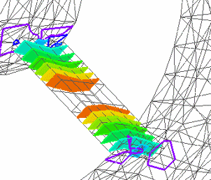
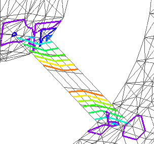
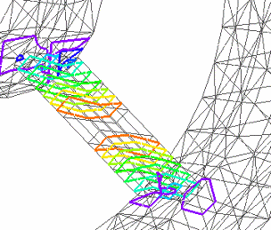

Display iso surfaces
When the contour style is set to Iso Contour, you can show iso lines or iso surfaces on the model. Iso lines are the default display mode.
-
In the Simulation tree-view pane, right-click the study name and choose the Modify Study command.
-
In the Modify Study dialog box, click Options to expand the dialog box.
-
In the Results Options section, clear the Generate only Surface results (faster) check box, and click OK.
-
Choose the Solve command to reprocess the study.

-
When the Simulation Results are displayed, select the Home tab→Show group→Display Options command
 .
. -
In the Display Options list, ensure that the following options are selected, and then click Close.
-
Contour
-
Surfaces in Iso Contour
-
-
If the model contains plate or surface elements, you must also select the Plate Thickness check box on the Display Options list to display iso surface contours instead of iso line contours.
The following table shows how you can change the display option combinations to show different iso contour results.
|
These display options |
Display these iso contours |
|
Contour=On Surfaces in Iso Contour=On Plate Thickness=On |
 |
|
Contour=On Surfaces in Iso Contour=Off Plate Thickness=Off |
 |
|
Contour=On Surfaces in Iso Contour=Off Plate Thickness=On |
 |